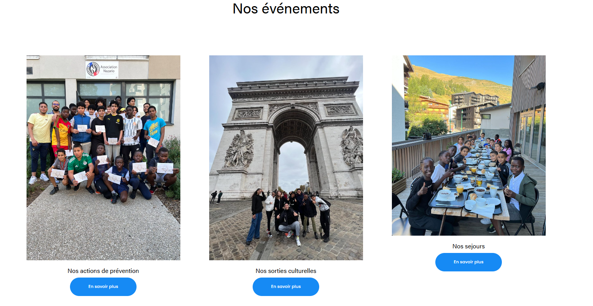
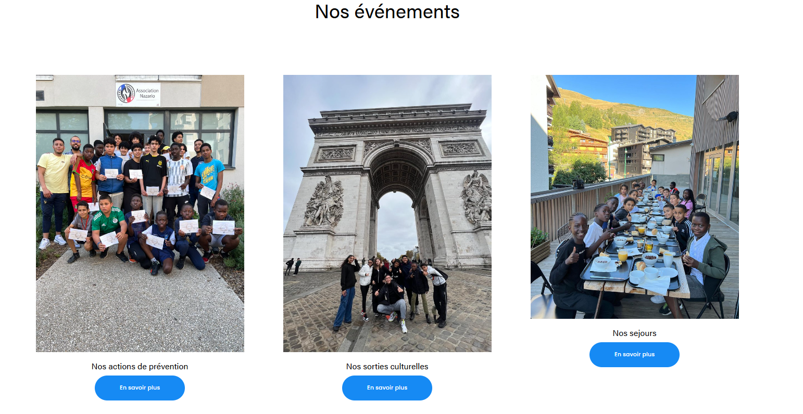

NouvelleVague
Dans le cadre de l'obtention de mon diplome de BTS SIO (services informatiques aux organisations), j'ai dû créer une application en language php,SQL et en utilisant le framework Codegniter lors de mon stage de 2ème année.
Le projet NouvelleVague est un projet mener en groupe de deux où.
.png)
.png)
.png)
Langage utiliser: php, Sql..
Outil utiliser: adminer, notepad++, Codegniter.
Date realisation: Du 20/12/2025 au 11/03/2025.
Creation du jeu NazarioGame
Dans le cadre de l'obtention de mon diplome de BTS SIO (services informatiques aux organisations), j'ai dû créer un jeu en language Pyhton pour l' Association Nazario lors de mon stage de 2ème année.
Le joueur doit entrer son nom avant de pouvoir joueur dans l'interface. Durant la partie le score du joueur est affiché durant la partie et enregistré dans la base de donnée quand la partie est finie. Le joueur peu deplacer son personnage avec les touche du clavier et lancer des attaques en appuyant sur la touche "espace du clavier" Le but est de toucher les monstres qui se dirige vers le personnage qu'on contrôle avec des boules de feu. Chaque 10 seconde une pluie de meteorite tombe, le joueur doit les éviter. Une fois que le joueur meurt un classement des 10 meilleurs score est affiché avec le nom des joueurs.
.png)
.png)
.png)
.png)
.png)
.png)
.png)
.png)
.png)
Langage utiliser: Python, Sql..
Outil utiliser: Pycharm, SQLite, Reallusion Hub, MakeHuman-Community et GIMP.
Date realisation: Du 13/01/2025 au 15/02/2025.
Fripouille
Dans le cadre de l'obtention de mon diplome de BTS SIO (services informatiques aux organisations), j'ai dû créer une application en language Java,SQL
Le projet Fripouille est un projet mener en groupe de deux .
Langage utiliser: java, Sql, IHM..
Outil utiliser: adminer,Eclipse, machine virtuel. .
Date realisation: Du 13/09/2024 au 08/10/2024.
GETCET
Dans le cadre de l'obtention de mon diplome de BTS SIO (services informatiques aux organisations), j'ai dû créer une application en language php,SQL
Le projet GETCET est un projet mener en groupe de deux .
Langage utiliser: php, Sql..
Outil utiliser: adminer, notepad++, machine virtuel, Wamp, phpMyAdmin. .
Date realisation: Du 13/09/2024 au 08/10/2024.
Refonte du site Nazario
Lors de mon stage de 1ère année et de 2ème année de BTS SIO chez l'association Nazario, j'ai réalisé la refonte complète de leur site internet. Le projet a inclus la conception d'une nouvelle interface utilisateur, la mise à jour des fonctionnalités, et l'optimisation pour les performances et l'accessibilité du site internet.

.png) 

Langage utiliser: HTML, CSS, Javascript.
Outil utiliser: Squarespace (CMS).
Date realisation: Du 13/05/2024 au 29/06/2024.
Projet reseaux
Dans le cadre de l'obtention de mon diplome de BTS SIO (services informatiques aux organisations), j'ai eu a réaliser un projet reseaux avec l'outil Packet Tracer.


Outil utiliser: Machine virtuel, Packet Tracer .
Date realisation: Du 03/12/2023 au 10/12/2023.
Création d'un site marchand
Dans le cadre de l'obtention de mon BTS SIO (services informatiques aux organisations), j'ai participé à la création d'un site marchand sur le thème des montres en bois, réalisé en groupe de deux personnes.
Le site marchand était initialement conçu comme un site vitrine, mais nous l'avons fait évoluer pour devenir un véritable site marchand. J'ai eu la responsabilité de concevoir et gérer la base de données du site, garantissant ainsi son bon fonctionnement. J'ai aussi la responsabilité de gérer l'inscription et la connexion du site marchand
Fonctionnalités principales du site
- Une page d'accueil mettant en avant les montres en bois et leurs avantages.
- Une page dédiée aux produits, affichant une liste détaillée des montres disponibles.
- Un panier d'achat interactif permettant aux utilisateurs de gérer leurs commandes.
- Une page "À propos", détaillant l'histoire et les valeurs du projet.
- Une page de connexion avec un formulaire sécurisé pour les utilisateurs enregistrés.
- Une page d'inscription permettant aux nouveaux utilisateurs de créer un compte.
Langage utilisé : HTML, CSS, PHP, SQL, Javascript.
Outil utilisé : Notepad++, Wamp, phpMyAdmin.
Date réalisation : Du 12/09/2023 au 12/11/2023.
Création de la veille technologique
Dans le cadre de l'obtention de mon diplome de BTS SIO (services informatiques aux organisations), j'ai dû créer un site en language HTML sur une veille technologique.
Définition de la « veille » :
La veille est un processus régulier de recherche, d'analyse et de sélection pertinente d'informations pouvant apporter des avantages compétitifs à une organisation (entreprise, réseau).
La veille est une action « volontariste » :
Il s'agit d'un processus informationnel volontariste à travers lequel on recherche des informations à caractère anticipatif concernant l'évolution d'une activité, de connaissances ou d'un environnement particulier.
Les objectifs de la veille :
L'objectif de la veille peut être de déceler des opportunités, de répondre aux besoins et attentes (exemple : besoins en formation), de trouver des solutions, les tendances dans un domaine spécifique ou encore de réduire les risques liés à la non maîtrise de l'avenir.
Langage utiliser: HTML, CSS, Javascript..
Outil utiliser: Notepad++.
Date realisation: Du 12/09/2023 au 12/11/2023.